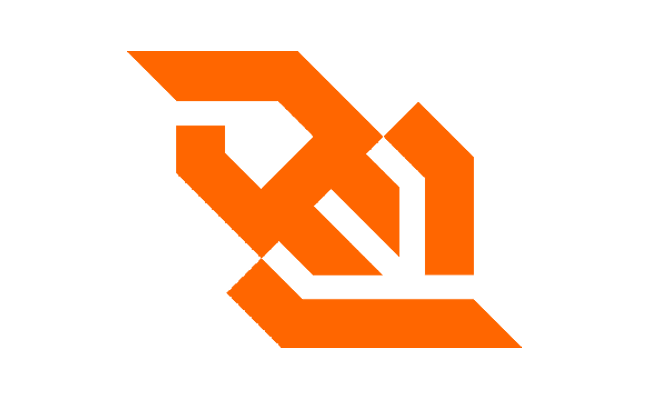
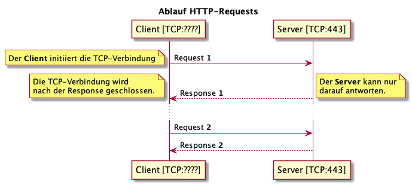
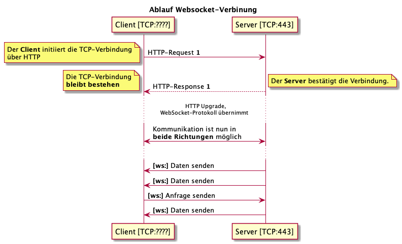
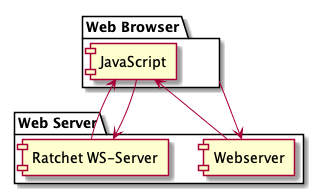
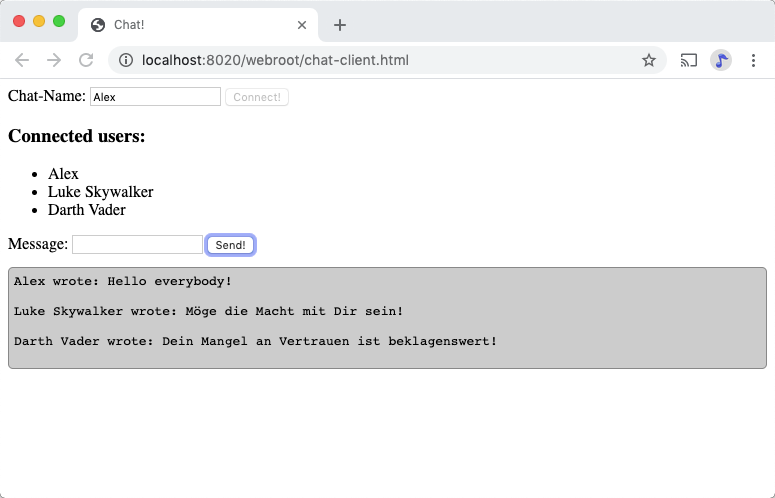

{% extends "../_base_template.html" %}
{% block title %}Lektion 19 - WebSockets {% endblock %}

{% block sections %}
<section data-markdown>
<textarea data-template>
<i class="fas fa-graduation-cap"></i> M151 - DB in Web-App einbinden - WebSockets
=============================

Heutiges Ziel
--------------

* Sie wissen, was WebSockets sind und wie sie sich von normalen HTTP-Requests unterscheiden
* Sie können einen WebSocket-Client in JavaScript implementieren
* Sie können einen WebSocket-Server in PHP (Ratchet PHP) implementiren

</textarea>
</section>

<section data-markdown>
<textarea data-template>
<i class="fas fa-graduation-cap"></i> Frage: Was ist ein WebSocket?
=============================



* <!-- .element: class="fragment" --> WebSocket ist ein "Full-Duplex-Kommunikationsprotokoll": Beide Teilnehmer
  können Sendungen initiieren und empfangen.
* <!-- .element: class="fragment" --> Es erlaubt die Interaktion zwischen einem **Browser** und einem **Server** ohne die HTTP-üblichen "Workarounds" wie Polling.
* <!-- .element: class="fragment" --> WebSocket ist ein **OSI-Layer 7-Protokoll** (wie HTTP)
* <!-- .element: class="fragment" --> WebSocket ist KEIN HTTP-Unter-Protokoll, sondern ein eigenes Layer-7-Protokoll.
* <!-- .element: class="fragment" --> WebSocket ist **HTTP-Kompatibel**: Eine WebSocket-Verbindung wird via
  HTTP-Verbindung initiiert, läuft in vielen Fällen über dieselben TCP-Kanäle.

</textarea>
</section>

<section data-markdown>
<textarea data-template>
<i class="fas fa-graduation-cap"></i> Unterschied HTTP / WebSocket-Verbindungen
=============================

Bei **HTTP**-Verbindungen wird **jeder** Request vom Client initiiert, und nach
erfolgter Antwort wird die TCP-Verbindung abgebaut:



Der **HTTP-Server** kann also nicht von sich aus Requests an den Client schicken.

</textarea>
</section>

<section data-markdown>
<textarea data-template>
<i class="fas fa-graduation-cap"></i> Unterschied HTTP / WebSocket-Verbindungen
=============================

**WebSocket-Verbindungen** beginnen auch als normale, client-initiierte
HTTP-Verbindungen. Danach jedoch übernimmt das WebSocket-Protokoll:



Die TCP-Verbindung **bleibt bestehen**, und es können **beide Seiten**
selbst-initiiert senden und empfangen.

Es bleibt somit eine **stehende TCP-Verbindung**. Der Server kennt somit auch den
Status eines Clients (ist der Client noch online oder nicht).

</textarea>
</section>

<section data-markdown>
<textarea data-template>
<i class="fas fa-graduation-cap"></i> Komponenten von WebSocket-Verbindungen
=============================

WebSocket-Verbindungen werden vom Browser via JavaScript initiiert. Auf der Server-Seite
muss ein spezieller WebSocket-Server die Verbindungen entgegennehmen / verwalten.



* Der **Browser** holt seine Webseite (inkl. JavaScript) wie gewohnt via HTTP von einem Webserver.
* Danach initiiert ein **JavaScript-WebSocket-Client** die Verbindung zum Backend **WebSocket-Server**, in unserem Fall zu **Ratchet PHP**
* Nun können die beiden WebSocket-Komponenten miteinander kommunizieren.

</textarea>
</section>

<section data-markdown>
<textarea data-template>
<i class="fas fa-flask"></i> Ein einfacher Echo-Server
=============================

Wir wollen uns das nun in der Praxis anschauen. Wir programmieren einen kleinen
**"Echo"**-Server:

* Clients können sich beim Server anmelden
* Eine Client-Liste wird angezeigt
* Sie können Nachrichten schicken
* Die Nachrichten werden dann an alle angemeldeten Clients geschickt

Dazu benötigen wir folgendes, welches wir nun zusammen aufbauen:

### Server

* Wir setzen auf unserer vorhandenen Composer-Projektstruktur auf
* Den HTML/JavaScript-Teil liefern wir direkt von Apache aus (kein PHP involviert)
* Den Websocket-Server-Teil bauen wir mit **Ratchet PHP** (siehe http://socketo.me/).

### Client

* Als Client programmieren wir eine simple HTML-Seite, welche:
* den WebSocket-Client in JavaScript implementiert.
* das Nachrichten-Handling (senden, empfangen) übernimmt und die Nachrichten ausgibt

</textarea>
</section>

<section>
<section data-markdown>
<textarea data-template>
<i class="fas fa-flask"></i> Erste Schritte: Server-Seite
=============================

### Schritt 1: Ratchet via composer installieren

```sh
$ cd pfad/zum/projekt/
$ composer require cboden/ratchet
```

### Schritt 2: Erstellen der Server-Klasse

Wir erstellen eine Ratchet-Applikationsklasse. Diese Klasse erhält von Ratchet via
callback folgende Events:

* `onOpen`: Wenn sich ein neuer Client verbindet
* `onMessage`: Wenn ein Client eine Nachricht schickt
* `onClose`: Wenn ein Client die Verbindung beendet
* `onError`: Wenn ein Verbindungsfehler zu einem Client auftritt

(Code siehe nächste Folie)

</textarea>
</section>
<section data-markdown>
<textarea data-template>
<i class="fas fa-flask"></i> Erste Schritte: Server-Seite
=============================

WebSocket-Applikationsserver-Skelett:

```php
<?php
namespace M151;

use Ratchet\MessageComponentInterface;
use Ratchet\ConnectionInterface;

class ChatServer implements MessageComponentInterface
{
    public function onOpen(ConnectionInterface $conn)
    {
        echo "Connection opened\n";
    }

    public function onMessage(ConnectionInterface $from, $msg)
    {
        echo "Message received: $msg\n";
    }

    public function onClose(ConnectionInterface $conn)
    {
        echo "Connection closed\n";
    }

    public function onError(ConnectionInterface $conn, \Exception $e)
    {
        echo "Connection error: {$e->getMessage()}\n";
    }
}
```
</textarea>
</section>
</section>

<section data-markdown>
<textarea data-template>
<i class="fas fa-flask"></i> Erste Schritte: Server-Seite
=============================

### Schritt 3: Server erstellen und starten

Wir erstellen nun unser Haupt-Script, welches ein TCP-Server hochfährt,
auf Verbindungen und Meldungen hört und unsere Applikations-Logikklasse
entsprechend aufruft:

```php
<?php
### server.php:
require_once(__DIR__.'/vendor/autoload.php');

use Ratchet\Server\IoServer;
use Ratchet\Http\HttpServer;
use Ratchet\WebSocket\WsServer;
use M151\ChatServer;

$server = IoServer::factory(
    new HttpServer(
        new WsServer(
            new ChatServer()
        )
    ),
    8080
);

$server->run();
```

Wir können unseren Server somit starten:

```sh
$ php server.php
```

</textarea>
</section>

<section data-markdown>
<textarea data-template>
<i class="fas fa-flask"></i> Erste Schritte: Client-Seite
=============================

### Schritt 4: Client-seitiges Hello World

```html
<!-- webroot/chat-client.html -->
<!DOCTYPE html>
<html>
    <head>
        <title>Chat!</title>
        <!-- wir verwenden der Einfachheit halber jQuery als JS-Helper-Library: -->
        <script src="https://code.jquery.com/jquery-3.4.1.min.js"></script>
    </head>

    <body>
        <button id="helloBtn">Hello, WS-World!</button>

        <script>
            // Neue WebSocket-Verbindung herstellen, global speichern:
            var host = window.location.host.replace(/:.*/,'');
            var port = 8080;
            var ws = new WebSocket(`ws://${host}:${port}`);

            // Auf den Btn-Click senden wir eine Meldung:
            $('#helloBtn').on('click', function(){
                ws.send('Hello, World!');
            });
        </script>
    </body>
</html>
```
<i class="far fa-hand-point-right"></i> Im Server-Konsolen-Fenster sollten Sie die Meldung nun sehen.

<i class="far fa-hand-point-right"></i> Versuchen Sie, den Code bis hierhin auzubauen und zum Laufen zu bringen!

</textarea>
</section>

<section>
<section data-markdown>
<textarea data-template>
<i class="fas fa-flask"></i> Server-Ausbau
=============================

Die Verbindung steht jetzt zwar, unser Server macht aber noch gar nichts, ausser einkommende Meldungen loggen.
Das holen wir jetzt nach. Unser Server soll:

* eingehende Verbindungen speichern, damit wir diese später adressieren können
* eingehende Meldungen an alle Verbindungen weitersenden

Dazu passen wir `ChatServer.php` an, siehe nächste Folie:

</textarea>
</section>
<section data-markdown>
<textarea data-template>
<i class="fas fa-flask"></i> Server-Ausbau:
=============================

```php
namespace M151;

use Ratchet\MessageComponentInterface;
use Ratchet\ConnectionInterface;

class ChatServer implements MessageComponentInterface
{
    // Client-Speicher:
    protected $clients = [];


    public function onOpen(ConnectionInterface $conn)
    {
        // Connection für spätere Verwendung speichern:
        $clientId = $conn->resourceId;
        $this->clients[$clientId] = $conn;
        echo "Connection opened: ID: {$clientId}\n";
    }

    public function onMessage(ConnectionInterface $from, $msg)
    {
        echo "Message received: $msg\n";
        // Meldung an alle Client senden:
        foreach ($this->clients as $client) {
            $client->send("Message from {$from->resourceId}: {$msg}");
        }
    }

    public function onClose(ConnectionInterface $conn)
    {
        // Connection aus dem Pool entfernen:
        $clientId = $conn->resourceId;
        unset($this->clients[$clientId]);
        echo "Connection closed: {$clientId}\n";
    }

    public function onError(ConnectionInterface $conn, \Exception $e)
    {
        echo "Connection error: {$e->getMessage()}\n";
        $conn->close();
    }
}
```
</textarea>
</section>
</section>

<section>
<section data-markdown>
<textarea data-template>
<i class="fas fa-flask"></i> Client-Ausbau: Senden/Empfangen von Nachrichten
=============================

Nun müssen wir auch noch den Client, unsere kleine JavaScript-Applikation, anpassen. Sie soll nun beliebige
Meldungen senden und empfangene Nachrichten in einem Chat-Verlauf anzeigen können.

Dazu bauen wir unser `chat-client.html` (nächste Folie) aus:
</textarea>
</section>
<section data-markdown>
<textarea data-template>
<i class="fas fa-flask"></i> Client-Ausbau: Senden/Empfangen von Nachrichten
=============================

```html
<!DOCTYPE html>
<html>
    <head>
        <title>Chat!</title>
        <script src="https://code.jquery.com/jquery-3.4.1.min.js"></script>
        <style>
            pre {background-color:#ccc;border: 1px solid #888;padding:5px;border-radius:5px}
        </style>
    </head>

    <body>
        <!-- die UI-Elemente: -->
        <div>
            <label>Message: <input id="message" type="text"/></label>
            <button id="send">Send!</button>
        </div>

        <pre id="messages"></pre>

        <script>
            // Neue WebSocket-Verbindung herstellen, global speichern:
            var host = window.location.host.replace(/:.*/,'');
            var port = 8080;
            var ws = new WebSocket(`ws://${host}:${port}`);

            // Wir hören auf den message-Event für einkommende Nachrichten:
            ws.onmessage = function(e) {
                // Wir schreiben die Nachricht ins Chat-Meldungsfenster:
                $('#messages').append(e.data + '\n\n');
            }

            // Auf den Btn-Click senden wir die Meldung im Textfeld:
            $('#send').on('click', function(){
                ws.send($('#message').val());
                $('#message').val('');
            });
        </script>
    </body>
</html>
```
</textarea>
</section>
</section>

<section data-markdown>
<textarea data-template>
<i class="fas fa-flask"></i> Zusammen!
=============================

<i class="far fa-hand-point-right"></i> Bauen Sie nun Ihren Chat-Server / Client soweit aus, dass Sie
Nachrichten versenden / empfangen / anzeigen können!

Sie können nun bereits auf den Server Ihres Kollegen verbinden.

### Nächste Ziele

* Anzeigen von richtigen Namen
* Anzeigen einer Client-Liste
* ...? Weitere Ideen dürfen Sie selber ausprobieren!



</textarea>
</section>

<section>
<section data-markdown>
<textarea data-template>
<i class="fas fa-flask"></i> Und nun? Identifikation der Clients!
=============================

Über die WebSocket-Verbindung lassen sich beliebige Daten / Nachrichten austauschen: WebSocket schreibt
kein bestimmtes Format vor.

Bis anhin haben wir einfachen Text verschickt. Wir haben die Connection-ID des Senders ausgegeben, denn das ist alles, was wir wissen.
Das ist natürlich unschön: **Wir möchten den Chat-Namen desjenigen anzeigen können.**

Dazu erweitern wir unser Formular:

* Wir erstellen ein **Textfeld für den Chat-Namen**
* Wir bauen die Verbindung erst nach Eingabe des Namens auf
* Wir **speichern den Chat-Namen in der Verbindung auf Server-Seite**, sodass wir diesen jeweils als Wert mitschicken können.

Das bedingt nun aber mind. 2 Nachrichten-Typen:

* Ein Message-Typ: wie bisher wollen wir Nachrichten schicken
* eine Anmelde-Information: Wenn die Verbindung steht, wollen wir dem Server unseren Chat-Namen mitteilen.

Dazu ist etwas **Umbau** an unserem Server / Client notwendig:

* Die Nachrichten senden / empfangen wir nun als **JSON-Daten**: Dies erlaubt uns eine Strukturierung der Daten, wir können
  also zusätzliche Informationen mitsenden
* Somit müssen Server und Client das neue Nachrichtenformat umsetzen.

<i class="far fa-hand-point-right"></i> Siehe nachfolgende Folien für Code-Beispiele!
</textarea>
</section>

<section data-markdown>
<textarea data-template>
<i class="fas fa-flask"></i> Ausbau: Client: Chat-Name und JSON-Meldungen
=============================

```html
<body>
    <div>
        <label>Chat-Name: <input id="name" type="text" /></label>
        <button id="connect">Connect!</button>
    </div>
    <div>
        <label>Message: <input id="message" type="text"/></label>
        <button id="send">Send!</button>
    </div>

    <pre id="messages"></pre>

    <script>
        // Wir verbinden erst auf den Connect-Btn-click:
        $('#connect').on('click', function(){
            $('#connect').prop('disabled', true);
            // Neue WebSocket-Verbindung herstellen, global speichern:
            var host = window.location.host.replace(/:.*/,'');
            var port = 8021;
            var ws = new WebSocket(`ws://${host}:${port}`);

            // Wenn die Verbindung steht, senden wir den Chat-Namen als Info an den Server:
            ws.onopen = function() {
                // Wir senden die Meldung nun als JSON-Daten, da wir nun mehrere Message-Typen haben:
                var msg = JSON.stringify({type: 'user-info', name: $('#name').val()});
                ws.send(msg);
            }

            // Wir hören auf den message-Event für einkommende Nachrichten:
            ws.onmessage = function(e) {
                var msg = JSON.parse(e.data); // Wir erwarten eine JSON-Antwort
                if (msg.type === 'message') {
                    var message = msg.message;
                    var from = msg.from;
                    // Wir schreiben die Nachricht ins Chat-Meldungsfenster:
                    $('#messages').append(`${from} wrote: ${message}\n\n`);
                }
            }

            // Auf den Btn-Click senden wir die Meldung:
            $('#send').on('click', function(){
                // Wir senden eine JSON-Meldung, typ: 'message':
                var msg = JSON.stringify({type: 'message', message: $('#message').val()});
                ws.send(msg);
                $('#message').val('');
            });
        });

    </script>
</body>
```

</textarea>
</section>

<section data-markdown>
<textarea data-template>
<i class="fas fa-flask"></i> Ausbau: Server: Chat-Name und JSON-Meldungen
=============================

Der Einfachheit halber sind hier nur die geänderten Funktionen von `ChatServer.php` aufgeführt:

```php
// .....

    public function onMessage(ConnectionInterface $from, $msg)
    {
        echo "Message received: $msg\n";
        $clientId = $from->resourceId;

        // Wir erwarten eine JSON-Meldung:
        $data = json_decode($msg);

        // Um was geht es? Nachrichten-Typ auswerten:

        // Eine eingehende User-Information: Speichern auf dem Connection-Objekt:
        if ($data->type === 'user-info') {
            // Username vom Frontend erhalten, Connection aktualisieren:
            $this->clients[$clientId]->username = $data->name;
            $this->sendMessageToAll($from, "User {$data->username} connected");
        }

        // Eine Meldung an alle senden:
        if ($data->type === 'message') {
            $this->sendMessageToAll($from, $data->message);
        }
    }

    protected function sendMessageToAll($from, $msg)
    {
        // Meldung an alle Client senden:
        $response = [
            'type' => 'message',
            'message' => $msg,
            'from' => $from->username
        ];
        foreach ($this->clients as $client) {
            $client->send(json_encode($response));
        }
    }

// .......

}
```

</textarea>
</section>
</section>

<section data-markdown>
<textarea data-template>
<i class="fas fa-flask"></i> Weiterer Ausbau: Client-Liste
=============================

Eine weitere Funktion ist die Anzeige der verbundenen Clients, wie hier im Screenshot gezeigt:


**Überlegen Sie sich selbständig, wie Sie dies implementieren würden!** Versuchen Sie, diese Funktionalität zu implementieren!

* meldet sich ein neuer Client an, wird die Liste der Clients bei allen Teilnehmern aktualisiert
* ebenso beim Abmelden / Schliessen des Browsers: die anderen Clients sollten dies "merken"


</textarea>
</section>

<section data-markdown>
<textarea data-template>
<i class="fas fa-flask"></i> ... Und noch weiter!
=============================

Falls Sie die Funktionalität bereits umgesetzt haben, finden Sie hier noch ein paar Ideen, um weiterzumachen:

* Private Nachricht an einen einzelnen Teilnehmer
* Verschiedene "Chat rooms", bei denen man sich anmelden kann
* Wiederherstellen der Verbindung, wenn Client / Webseite neu geladen wird

</textarea>
</section>

{% endblock %}
